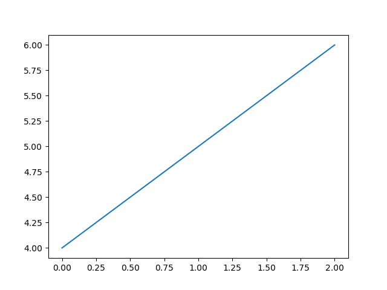

Table of Contents
<a href="https://travis-ci.org/jkitchin/pycse"><img src="https://travis-ci.org/jkitchin/pycse.svg?branch=master"></a>
{kind=link}
<a href='https://coveralls.io/r/jkitchin/pycse'><img src='https://coveralls.io/repos/jkitchin/pycse/badge.png' alt='Coverage Status' /></a> <a href="http://depsy.org/package/python/pycse"> <img src=""> </a>
If you want to cite this project, use this doi:10.5281/zenodo.19111.
<a href="http://dx.doi.org/10.5281/zenodo.19111"><img src="" alt="10.5281/zenodo.19111"></a>
@misc{john_kitchin_2015_19111, author = {John R. Kitchin}, title = {pycse: First release}, month = jun, year = 2015, doi = {10.5281/zenodo.19111}, url = {http://dx.doi.org/10.5281/zenodo.19111} }
This git repository hosts my notes on using python in scientific and engineering calculations. The aim is to collect examples that span the types of computation/calculations scientists and engineers typically do to demonstrate the utility of python as a computational platform in engineering education.
Most of the sections in the pycse.org file are posted at http://jkitchin.github.com. Feel free to leave comments there.
You may also like to visit the html version of the document at: http://jkitchin.github.com/pycse/pycse.html
You may want to install the python library with pycse:
pip install pycse
Feeling brave? Try:
pip install git+git://github.com/jkitchin/pycse
John Kitchin jkitchin@andrew.cmu.edu
1 What can you do with it?
1.1 org-mode integration
If you use org-mode and regular python blocks consider this:
import pycse.orgmode as org import matplotlib.pyplot as plt data = [['x', 'y'], None, [1, 2], [2, 4]] org.table(data, name='table-data', caption='Data from a python table') print() plt.plot([4, 5, 6]) org.figure(plt.savefig('images/a-figure.png'), name='fig:1', caption='A figure in org-mode')
| x | y |
|---|---|
| 1 | 2 |
| 2 | 4 |

Figure 1: A figure in org-mode
The orgmode module provides functions that generate org syntax for many org-elements. See for more details: pycse.orgmode
These don't work as well with ipython blocks. Ipython has a different org-integration setup in ob-ipython (an emacs library).
1.2 Python/lisp interaction
You can use Python to generate lisp. You might do that to generate code to be run in lisp, e.g.
from pycse.lisp import * print([Symbol("setf"), Symbol("x"), Cons("a", 5)].lisp)
(setf x ("a" . 5))
Or you might want to use the results from a Python command in lisp like this:
(run-python) (mapcar (lambda (x) (* 2 x)) (read (python-shell-send-string-no-output "from pycse.lisp import * import numpy as np a = np.array([0, 1, 2, 3]) * 2 print(a.lisp)")))
| 0 | 4 | 8 | 12 |
1.3 Limited support for functions with quantities
Pycse defines fsolve and odeint to work with the quantities package. Note that units are particularly challenging to work with and they do not work with all functions in Python. Sometimes they are useful though.
Here is an example of solving \(C_A = C_{A0} \exp(-k t)\) for the \(t\) that makes $C_A(t) = 0.01 mol/L if \(C_{A0} = 1\) mol/L and \(k\) = 1 1/s.
from pycse import * from pycse.qmath import fsolve CA0 = 1 * u.mol / u.L CA = 0.01 * u.mol / u.L k = 1.0 / u.s def func(t): return CA - CA0 * np.exp(-k * t) tguess = 4 * u.s sol1, = fsolve(func, tguess) print('sol1 = ', sol1)
sol1 = 4.605170185988092 s
Here we integrate the equation \(\frac{dC_a}{dt} = -k C_A\) over the range of 0 to 5 seconds.
from pycse import * from pycse.qmath import odeint k = 0.23 / u.s Ca0 = 1 * u.mol / u.L def dCadt(Ca, t): return -k * Ca tspan = np.linspace(0, 5) * u.s sol = odeint(dCadt, Ca0, tspan) print(sol[-1]) plt.plot(tspan, sol) plt.xlabel('Time ({0})'.format(tspan.dimensionality.latex)) plt.ylabel('$C_A$ ({0})'.format(sol.dimensionality.latex))
[ 0.31663678] mol/L
<matplotlib.text.Text at 0x110a5a710>
<matplotlib.figure.Figure at 0x110a265f8>

1.4 Float comparisons
Float comparisons are tricky because they are not exact. Pycse provides these comparison functions which use a tolerance in the comparison:
| feq | == |
| flt | < |
| fgt | > |
| fle | <= |
| fge | >= |